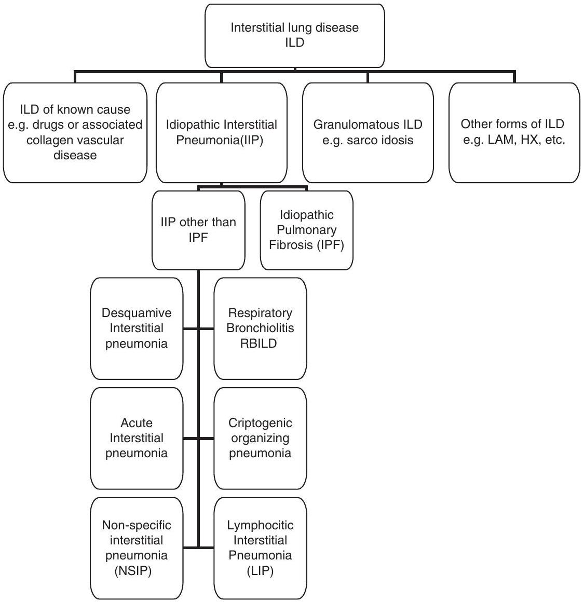
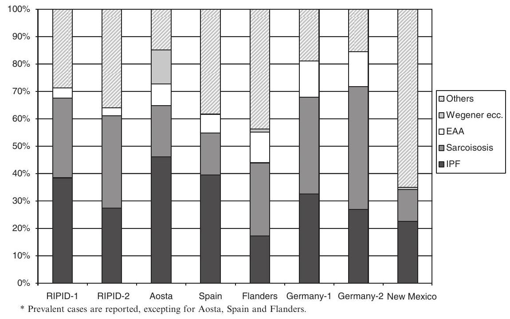
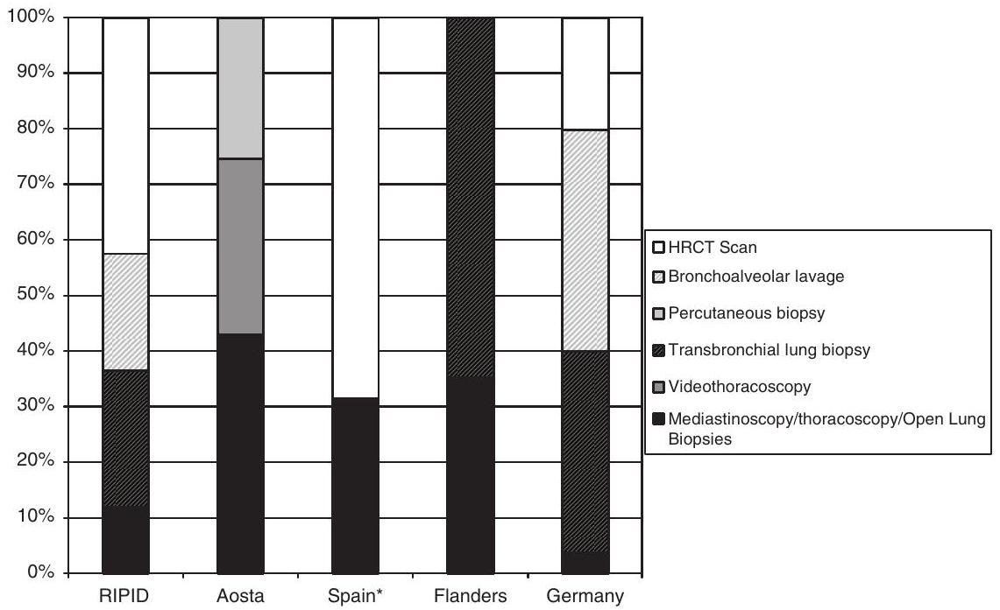

Chapter 1: Interstitial Lung Disease: Introduction
Roberto G. Carbone, Fabio Montanaro, and Giovanni Bottino
Introduction
Interstitial lung diseases (ILDs) are a large group of heterogeneous inflammatory fibrosing disorders comprising more than 200 entities that predominantly affect the pulmonary interstitium rather than the airspaces [1]. Significant progress in the understanding of ILD was made since the 1960, with the recognition of collagen vascular diseases, drugs, and occupational exposures as potential causes. However, a wide spectrum of pathologies, presentations, and outcomes still remain unknown. Liebow and Carrington [2] were first to classify idiopathic interstitial pneumonia (IIP) into five histologic subgroups: usual interstitial pneumonia (UIP), bronchiolitis interstitial pneumonia, desquamative interstitial pneumonia, giant interstitial pneumonia, and lymphoid interstitial pneumonia. In 1998, the classification was modified by Katzenstein and Myers [3], with UIP corresponding to Hamman-Rich Syndrome [4], respiratory bronchiolitis associated with ILD, desquamative interstitial pneumonia, nonspecific interstitial pneumonia (NSIP), and acute interstitial lung disease. The modern classification, which was recognized by the American Thoracic Society and European Respiratory Society [5], included another entity: cryptogenic organizing pneumonia (Fig. 1.1). Different ancillary diagnostic procedures, such as chest x-ray, high-resolution computed tomography (HRCT), Gallium ${}^{67}$ scintigraphy, and bronchoalveolar lavage, are considered inaccurate and nonspecific in diagnosing this group of diseases, especially in the their early stages [6-11]. Imaging with radiolabeled indium-111 octreotide scintigraphy (Octreoscan, Mallinckrodt Medical, Inc., St. Louis, MO), which is used in the evaluation of patients with neuroendocrine tumours, meningiomas, astrocytomas as well as lymphomas and thymomas [12], has been proposed in the study of ILD by several clinicians and nuclear medicine specialists.
As for sarcoidosis, the use of Octreoscan was shown to be a sensitive diagnostic tool, particularly in the imaging of lymph nodes and spleen, and its use appears to enable the better identification of lung disease activity [13-15].
Recently, the authors of several studies [16-17] have proposed the use of echocardiography and cardiac catheterization as effective tools in the evaluation of pulmonary hypertension, which is a predictive factor of survival associated with systemic scleroderma. This hypothesis suggests a similar correlation between idiopathic pulmonary fibrosis (IPF) and pulmonary arterial hypertension [18].
Classification of interstitial lung disease (ILD)
Fig. 1.1 Classification of ILD
Therapy for patients in the advanced stages of ILD has little or no benefit, which is why prompt diagnosis is important (especially with UIP or NSIP) and why lung biopsy considered the gold standard for the diagnosis. The importance of tissue morphology has been addressed in the American Thoracic Society/ European Respiratory Society / American College of Chest Physicians classification of IIP, where both histological and clinicoradiological findings with the use of HRCT are taken into account [19,20].
The difficulty in the clinical assessment and classification of ILD emphasizes the complexity of this group of diseases, which are still poorly understood and underdiagnosed. The scope of the following two chapters is to describe (1:) the epidemiology, the genetic factors of fibrotic lung diseases, the physiology, and the pathophysiology of the pulmonary circulation in correlation with ILD; (2) the role of imaging, such as HRCT, gallium-67, Octreoscan, and echocardiography in the development of new management strategies of ILD-associated pulmonary hypertension; and (3) the utility of different imaging techniques in the clinical medical practice.
Patients suspected of ILD must be referred to a specialist as soon as possible for the following reasons: (1) the earlier patients are referred to a pulmonologist, the greater the possibility of confirming the diagnosis; (2) an accurate diagnosis is crucial, because some ILDs are treatable; (3) early referral also may ensure that the patient is an eligible lung transplant candidate; (4) early diagnosis and intervention may improve outcomes and enable the patient to be enrolled in one of the many ongoing trials for potential new therapies; and (5) a prompt diagnosis of ILD should depend upon a multidisciplinary approach, in which clinical and radiological data assessed by physicians, pulmonologists, surgeons, cardiologists, pathologists, radiologists, and nuclear medicine specialists are integrated.
Epidemiology of ILD in Europe in Comparison With the USA
As mentioned previously, ILD is a group of approximately 200 different pathologies of heterogeneous origin, with different clinical aspects and prognosis. This implies that describing the "epidemiology of ILDs" involves the descriptions of each specific pathology included in this group.
Epidemiology of ILD
The first population-based registry of patients with ILD was established in Bernalillo County (NM, USA) in 1988 [21]. During the period of 1988-1993, 460 patients with ILD were enrolled in the patient registry: $56\%$ were prevalent cases and $44\%$ were incident cases diagnosed during the study period. The prevalence rates of ILD were estimated to be 80.9 per 100,000 among men and 67.2 per 100,000 among women and incidence rates of 31.5 per 100,000 and 26.1 per 100,000, respectively. This study had some limitations: first, only $7\%$ of the cases had the diagnosis confirmed by open lung biopsy; second, the autopsy population-which was used to estimate the occurrence of preclinical and undiagnosed ILD in the general population-was much younger than the control group (average ages: 42 years versus 70 years, respectively); finally, concerns regarding possible overdiagnosis or underdiagnosis in the investigated community, possible overdiagnosis because of the activity of the registry itself, and the estimated pool of patients that could be undiagnosed were expressed by the authors but not investigated.
During the period of 1992-1996, in Flanders, a prospective registry collected information about 362 prevalent and incident cases of ILD. Cases came from 20 respiratory centers who responded to a standardized questionnaire. An incidence of 1.0 per 100,000/year was estimated [22].
In Germany, a prospective incidence registry of newly diagnosed cases of ILD started its activity in January 1995. Up to early 2000, 1,184 cases have been registered [23]. In Spain, an ILD registration was conducted on 23 pulmonary medicine centres during 1 year (Oct. 2000 to Sept. 2001). In the study period, 511 cases were registered, allowing researchers to estimate an incidence rate of 7.6 per 100,000/ year [24].
In Italy, two different registries were created. The first aimed to retrospectively survey the occurrence of different ILD through a questionnaire sent to 34 respiratory centres ( 17 respondents). Finally, 4,169 patients were registered and validated [25]. The second Italian registry, namely the Italian registry for diffuse infiltrative lung disorders (RIPID, i.e., Registro Italiano Pneumopatie Infiltrative Diffuse), was established in 1998 with the aim of creating a national database of these disorders, providing the background for epidemiological and clinical studies of adequate sample size [26]. During the period of 1998-2005, a total of 3,152 patients had been registered. Unfortunately, the prevalence and incidence rates could not be estimated because the size of the population covered by the participating centre was not exactly estimable, with the exception of Bolzano province, where 193 newly diagnosed cases of diffuse infiltrative lung diseases were enrolled in the registry and an incidence of 2.9 cases per 100,000 was estimated in the period 1990-2004. The most frequently reported interstitial lung disorders were sarcoidosis and IPF.
The RIPID did not include a series of 128 patients diagnosed with ILD of unknown etiology who were referred to Regional Hospital, Aosta ( 126,000 inhabitants) in the period 1995-2004. According to the recommendations of ATS Criteria, the diagnosis was made on clinical, radiological, and histological data:59 patients were diagnosed with UIP/IPF (46.1%), 19 with NSIP (14.8%), and the remaining 50 patients (39.1%) with other ILD (including:24 with sarcoidosis, 16 with Wegener granulomatosis, and 10 with extrinsic allergic alveolitis). All diagnosis of ILD were confirmed by biopsy:42 open pulmonary biopsies, 40 video-assisted thoracoscopies, 32 percutaneous biopsies, 12 mediastinoscopies, and 2 lymph node biopsies [27].
Because incidence/prevalence data were difficult to estimate or, where estimated, were susceptible to uncontrollable biases, the comparison of the occurrence in different areas could be not informative and likely biased. On the contrary, to compare the relative frequency of different ILD subgroups could be informative (Fig. 1.2). In all the registries, the most frequent diseases were IPF (more than $30\%$ of cases except in Flanders) and sarcoidosis, ranging from $14.9\%$ in Spain to $35.4\%$ in Germany.
Fig. 1.2 Relative frequency of ILD subgroups in different countries
Epidemiology of ILD Subgroups
Besides general ILD registries, epidemiological investigations on specific subgroup pathologies included in the large ILD disease also have been conducted.
IPF
IPF is not a rare disease. Approximately 80,000 cases of IPF have been identified in the USA, with an estimated 30,000 new cases developing each year. The descriptive epidemiology of IPF has not been deeply investigated, and estimates are quite limited. Moreover, criteria providing the basis for these estimates often are not precisely defined. In early 1990s, prevalence estimates of IPF in the general population varied from 3 to 6 cases per 100,000 [28,29], whereas the aforementioned New Mexico's ILD registry [21] revealed a prevalence of 20.2 and 13.2 per 100,000 among men and women, respectively, and an incidence of 10.7 per 100,000 per year among men and 7.4 among women. IPF is reported to occur more commonly in men than women [28,29].
Typically, patients present between the ages of 40 and 70 years, and approximately $66\%$ of patients are older than 60 years of age at presentation. The mean age at diagnosis is 66 years, and the prevalence for people ages 35 to 44 years is 2.7 cases per 100,000 whereas the prevalence for people older than 75 years of age exceeds 175 cases per 100,000.
The incidence of IPF increases with age, as approximately two-thirds of patients with IPF are older than 60 years of age $[28,30,31]$, and the incidence is 160 per 100,000 among 75 years of age and older [21]. There is no valid explanation as to why IPF is a disease that occurs predominately in older people.
Limited evidence exists that the geographical location and ethnicity are related to diagnosis. There is a slight male preponderance of disease, and the age-adjusted mortality rate for white patients exceeds that for black patients. Age-adjusted rates mortality rates from IPF appear to be greater among the white population and lower among the black population [31]. A geographic variation was observed that may reflect differences in occupational and environmental exposures.
Because IPF is a chronic disease that is almost uniformly fatal, the ratio of the prevalence to the incidence can provide a crude indication of the duration of survival after diagnosis [32]. Hubbard et al. [33] investigated the rate of mortality from IPF (i.e., cryptogenic fibrosing alveolitis) in England and Wales (UK), Australia, Canada, Scotland, Germany, USA, and New Zealand to determine whether mortality was increasing or decreasing compared with that observed in other seven countries. They observed that the greatest mortality rates for CFA were observed in UK, i.e., England and Wales, followed by Scotland, New Zealand, Australia, and Canada, whereas the USA and Germany had CFA mortality rates considerably lower than those for the other countries. Mortality from CFA had increased in England and Wales, Scotland, Canada, and Australia since 1979 whereas it decreased in the USA and it was low and stable in Germany.
Concerns regarding the accuracy of IPF diagnoses were raised. In the Italian RIPID, the diagnosis of IPF was based upon a surgical lung biopsy only in $20\%$ of cases; this percentage of pathological diagnosis was slightly lower than that reported in the Spanish register ( $32\%$ ) [24], whereas in the Regional Hospital of Aosta, all diagnoses were biopsy-confirmed and $33\%$ of all patients with IIP had open lung biopsies.
Sarcoidosis
Information on sarcoidosis can be traced from general ILD registries (Fig. 1.2) or from specific analytical studies; no specific registry of patients diagnosed with sarcoidosis have been established. Sarcoidosis represented $11.6\%$ of prevalent cases registered by Coultas et al. [21] and 7.8 percent of incident ones in the same registry. Only approximately one-third of cases patients with sarcoidosis in the RIPID had a lung surgical biopsy.
A Case Control Etiologic Study of Sarcoidosis (ACCESS) generated a large database for a series of analytical epidemiological reports. In this study, in which the authors aimed to study the etiology of sarcoidosis, newly biopsy-confirmed patients with sarcoidosis from several US regions were examined with the use of a standardized evaluation [34-36].
In the first report, 736 patients were considered to be representative of sarcoidosis in the USA, even if some potential recruitment biases have been identified. In this report, organ involvement was investigated, revealing differences attributable to race, sex, and age [34]. Because of the considerable sample size of case and control relatives, Rybicki et al. [35] could demonstrate that sarcoidosis aggregates in family, confirming what was before based only on anecdotal reports. A third report based on ACCESS database was aimed to investigate the relationship between environmental and occupational factors and risk of sarcoidosis. The results of this study suggested that insecticides, agricultural environments, and exposure to microbial aerosol may be associated with sarcoidosis, whereas many other possible etiologic require further investigation [36].
Summary
The data of aforementioned registries confirmed that epidemiological registries can be useful tools to investigate rare or relatively rare disorders (e.g., sarcoidosis and IPF) to design multicentric clinical studies of adequate sample size, especially cohort and prospective studies, aimed at providing standardized diagnostic, management, and follow-up criteria with a particular regard to outcome measures such as survival and quality of life.
This consideration is a consequence of the fact that death certificates and state mortality data are neither sensitive nor accurate for describing the occurrence of ILD. Proof of that could be the apparently low mortality rates from IPF in USA when compared with other countries [37].
* IPF cases only. Both HRCT and open lung biopsies were used in combination with other diagnostic procedures.
Fig. 1.3 Diagnostic procedures in ILD in different countries
A limitation in the data of ILD registries is the limited use of biopsies. As reported in this chapter, only low percentages of cases had a histology confirmed diagnosis, whereas most diagnoses are based upon clinical observation and radiological and HRCT scan findings. Unfortunately, the accuracy of the HRCT scan is limited, as only approximately $50\%$ of IPF diagnosis obtained in that way could be confirmed and the remaining should be inexorably wrong [7]. Therefore, the use of open lung biopsy should be the gold standard. Only Aosta Valley had all its cases histologically confirmed (Fig. 1.3). Comparability of registries included in Fig. 1.2 is limited, as RIPID included only 167 cases of 4,169 and Flanders only 71 out of 362. Finally, different diagnostic procedures for each patient have been registered in Spain.
References
1. Green FHY. Overview of pulmonary fibrosis. Chest 2002;122:334S-339S.
2. Liebow AA, Carrington CB. The interstitial pneumonia. In: Simon M, Potchen EJ, Le May M, editors. Frontiers of pulmonary radiology. New York: Grune & Sratton; 1969. p. 102-141.
3. Katzenstein ALA, Myers JL. Idiopathic pulmonary fibrosis. Clinical relevance of pathologic classification. Am J Respir Crit Care Med 1998;157:1301-1315.
4. Hamman L, Rich A. Acute diffuse interstitial fibrosis of the lung. Bull Johns Hopkins Hosp 1944;74:177-212.
5. American Thoracic Society and European Respiratory Society. American Thoracic Society/ European Respiratory Society international multidisciplinary consensus classification of the idiopathic interstitial pneumonias. Am J Respir Crit Care Med 2002;165:277-304.
6. Turner-Warwick M, McAllister W, Lawrence R, et al. Corticosteroid treatment in pulmonary sarcoidosis: do serial lavage lymphocyte counts, serum angiotensin converting enzyme measurements and gallium-67 scan help management? Thorax 1986;41:903-913.
7. Gross TJ, Hunninghake GW. Idiopathic pulmonary fibrosis. N Eng J Med 2001;345: 517-525.
8. Grijm K, Verberne HJ, Krowels FH, Weller FR, Jansen MH, Bresser P. Semiquantitative ${}^{67}$Ga scintigraphy as an indicator of response to and prognosis after corticosteroid treatment in idiopathic interstitial pneumonia. J Nucl Med 2005;46:1421-1426.
9. Wells AU, Hansell DM, Rubens MB, Cullinan P, Haslam PL, Black CM, Du Bois RM. Fibrosing alveolitis in systemic sclerosis. Bronchoalveolar lavage findings in relation to computed tomographic appearance. Am J Respir Crit Care Med 1994;150:462-468.
10. Aqusti C, Xaubert A, Luburich P, Ayuso MC, Roca J, Rodriguez-Roisin R. Computed tomog-raphy-guided bronchoalveolar lavage in idiopathic pulmonary fibrosis. Thorax 1996;51: 841-845.
11. Leung AN, Brainer MW, Caillat-Vigneron N. Sarcoidoisis activity: correlation of HRCT findings with those of ${}^{67}$Ga scanning, bronchoalveolar lavage, and serum angiotensin-converting enzyme essay. J Comput Assist Tomogr 1998;22:229-234.
12. Musi M, Carbone RG, Bertocchi C, Cantalupi DP, Michetti G, Pugliese C, Virotta G. Bronchial carcinoid tumours: a study on clinicopathological features and role of octreotide scintigraphy. Lung Cancer 1998;22:97-102.
13. Lebthai R, Crestani B, Belmatoug N, Daou D, Genin R, Dombret MC, Palazzo E, Faraggi M, Aubier M, Le Guludec D. Somatostatin receptor scintigraphy and gallium scintigraphy in patients with sarcoidosis. J Nucl Med 2001;42:21-26.
14. Carbone R, Filiberti R, Grosso M, Paredi P, Peano L, Cantalupi D, Villa G, Monselise A, Bottino G, Shah P.. Octreoscan perspectives in sarcoidosis and idiopathic interstitial pneumonia. Eur Rev Med Pharmacol Sci 2003;7:97-105.
15. Carbone RG, Musi M, Cantalupi DP, et al. Somatostatin receptor versus Gallium-67 scintigraphy in interstitial lung diseases. Chest 1999;119:315S.
16. McGoon M, Gutterman D, Steen V, Barst R, McCrory DC, Fortin TA, Loyd JE; American College of Chest Physicians. Screening early detection, and diagnosis of pulmonary arterial hypertension. ACCP evidence-based clinical practice guidelines. Chest 2004;126:14S-34S.
17. Mc Laughlin VV, Presberg KW, Doyle RL, Abman SH, McCrory DC, Fortin T, Ahearn G; American College of Chest Physicians. Prognosis of pulmonary arterial hypertension. ACCP evidence-based clinical practice guidelines. Chest 2004;126:78S-92S.
18. Nadrous HF, Pellika PA, Krowka MJ, Swanson KL, Chaowalit N, Decker PA, Ryu JH. Pulmonary hypertension in patients with idiopathic pulmonary fibrosis. Chest 2005;128:2393-2399.
19. American Thoracic Society. Idiopathic pulmonary fibrosis: diagnosis and management. International Consensus Statement. Am J Respir Crit Care Med 2000;161:646-664.
20. Leslie KO. Historical perspective. A pathologic approach to the classification of idiopathic interstitial pneumonia. Chest 2005;128:513S-519S.
21. Coultas DB, Zumwalt RE, Black WC, Sobonya RE. The epidemiology of interstitial lung diseases. Am J Respir Crit Care Med 1994;150:967-972.
22. Roelandt M, Demedts M, Callebaut W, Coolen D, Slabbynck H, Bockaert J, Kips J, Brie J, Ulburghs M, De Boeck K, et al. Epidemiology of interstitial lung disease (ILD) in Flanders: registration by pneumologists in 1992-1994. Working group on ILD, VRGT. Vereniging voor Respiratoire Gezondheidszorg en Tuberculosebestrijding. Acta Clin Belg 1995;50:260-268.
23. Schweisfurth H. Report by the Scientific Working Group for Therapy of Lung Diseases: German Fibrosis Register with initial results [in German]. Pneumologie 1996;50:899-901.
24. Xaubet A, Ancochea J, Morell F, Rodriguez-Arias JM, Villena V, Blanquer R, Montero C, Sueiro A, Disdier C, Vendrell M; Spanish Group on Interstitial Lung Diseases, SEPAR.. Report on the incidence of interstitial lung diseases in Spain. Sarcoidosis Vasc Diffuse Lung Dis 2004;21:64-70.
25. Agostini C, Albera C, Bariffi F, De Palma M, Harari S, Lusuardi M, Pesci A, Poletti V, Richeldi L, Rizzato G, Rossi A, Schiavina M, Semenzato G, Tinelli C; Registro Italiano Pneumopatie Infiltrative Diffuse. First report of the Italian register for diffuse infiltrative lung disorders (RIPID). Monaldi Arch Chest Dis 2001;56:364-368.
26. Tinelli C, De Silvestri A, Richeldi L, Oggionni T. The Italian register for diffuse infiltrative lung disorders (RIPID): a four-year report. Sarcoidosis Vasc Diffuse Lung Dis 2005;22(Suppl 1):S4-S8.
27. Carbone R, Montanaro F, Bottino G. Outcome in interstitial lung disease. Eur Resp J 2005; 26:268.
28. Scott J, Johnston I, Britton J. What causes cryptogenic fibrosing alveolitis? A case-control study of environmental exposure to dust. BMJ. 1990;301:1015-1017.
29. Iwai K, Mori T, Yamada N, Yamaguchi M, Hosoda Y. Idiopathic pulmonary fibrosis. Epidemiologic approaches to occupational exposure. Am J Respir Crit Care Med 1994;150: 670-675.
30. Hubbard R, Lewis S, Richards K, Johnston I, Britton J. Occupational exposure to metal or wood dust and aetiology of cryptogenic fibrosing alveolitis. Lancet 1996;347:284-289.
31. Mannino DM, Etzel RA, Parrish RG. Pulmonary fibrosis deaths in the United States, 1979-1991. An analysis of multiple-cause mortality data. Am J Respir Crit Care Med 1996;153:1548-1552.
32. Weycker D, Oster G, Edelsberg J, et al. Economic costs of idiopathic pulmonary fibrosis. Paper presented at: CHEST 2002, November 2-7, 2002; San Diego, California.
33. Hubbard R, Johnston I, Coultas DB, Britton J. Mortality rates from cryptogenic fibrosing alveolitis in seven countries. Thorax 1996;51:711-716.
34. Baughman RP, Teirstein AS, Judson MA, Rossman MD, Yeager H Jr, Bresnitz EA, DePalo L, Hunninghake G, Iannuzzi MC, Johns CJ, McLennan G, Moller DR, Newman LS, Rabin DL, Rose C, Rybicki B, Weinberger SE, Terrin ML, Knatterud GL, Cherniak R; Case Control Etiologic Study of Sarcoidosis (ACCESS) research group. Clinical characteristics of patients in a case control study of sarcoidosis. Am J Respir Crit Care Med 2001;164:1885-1889.
35. Rybicki BA, Iannuzzi MC, Frederick MM, Thompson BW, Rossman MD, Bresnitz EA, Terrin ML, Moller DR, Barnard J, Baughman RP, DePalo L, Hunninghake G, Johns C, Judson MA, Knatterud GL, McLennan G, Newman LS, Rabin DL, Rose C, Teirstein AS, Weinberger SE, Yeager H, Cherniack R; ACCESS Research Group. A case-control etiologic study of sarcoidosis (ACCESS). Am J Respir Crit Care Med 2001;164:2085-2091.
36. Newman LS, Rose CS, Bresnitz EA, Rossman MD, Barnard J, Frederick M, Terrin ML, Weinberger SE, Moller DR, McLennan G, Hunninghake G, DePalo L, Baughman RP, Iannuzzi MC, Judson MA, Knatterud GL, Thompson BW, Teirstein AS, Yeager H Jr, Johns CJ, Rabin DL, Rybicki BA, Cherniack R; ACCESS Research Group. A case control etiologic study of sarcoidosis: environmental and occupational risk factors. Am J Respir Crit Care Med 2004;170:1324-1330.
37. Coultas DB, Hughes MP. Accuracy of mortality data for interstitial lung diseases in New Mexico, USA. Thorax 1996;51:717-720.